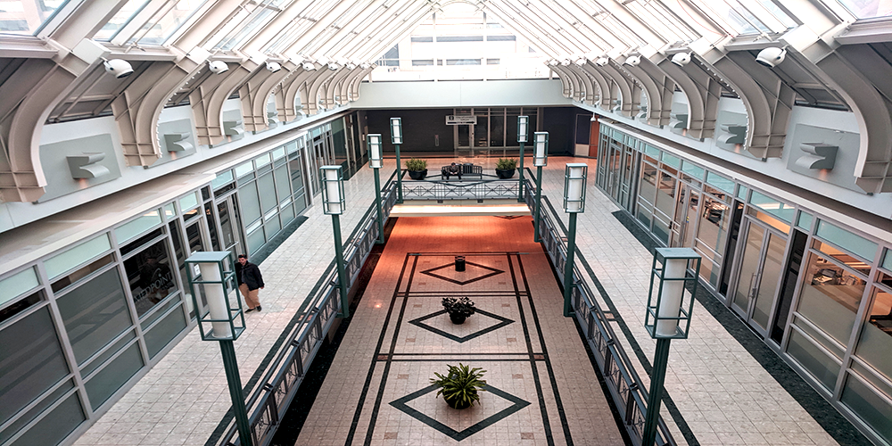
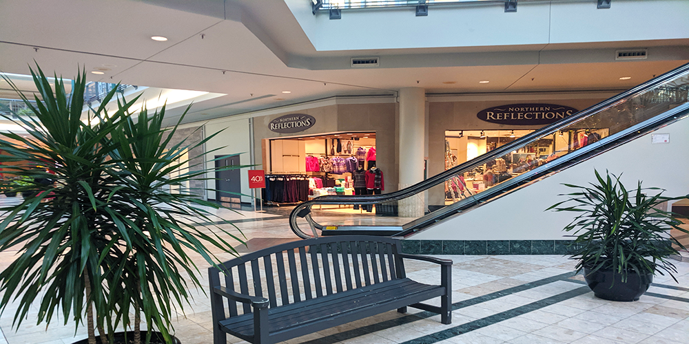

Citi Plaza
Image1
Summary
Citi Plaza is a fixture of downtown London. Located on Wellington Street and spanning from Dundas all the way to York Street this mall was once an extremely busy and successful location. This mall offers many interesting details such as being connected to the London Public Library as well as housing Imagine Cinemas. The architecture of this mall might just be the most interesting aspect though. A large amounts of glass ceiling and use of light colours makes this mall appear incredibly light and modern.
See: https://www.citiplazalondon.com/
Image2
Is it Dead?
Despite having an incredible location, connections to several important amenities and a very pleasant design, Citi plaza is certainly a dead mall. Many of these malls long, bright hallways are completely empty except for the odd clinic or educational center. The lack of foot traffic is also abundantly clear which is quite amazing considering where this mall is located.
The fact that Citi Plaza can be classified as a dead mall is a sign of the decline of the popularity of the mall. At a glance, this mall has everything going for it yet it fails to get people through its doors.